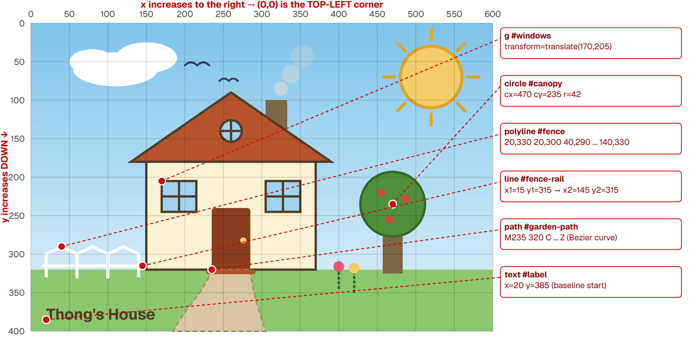
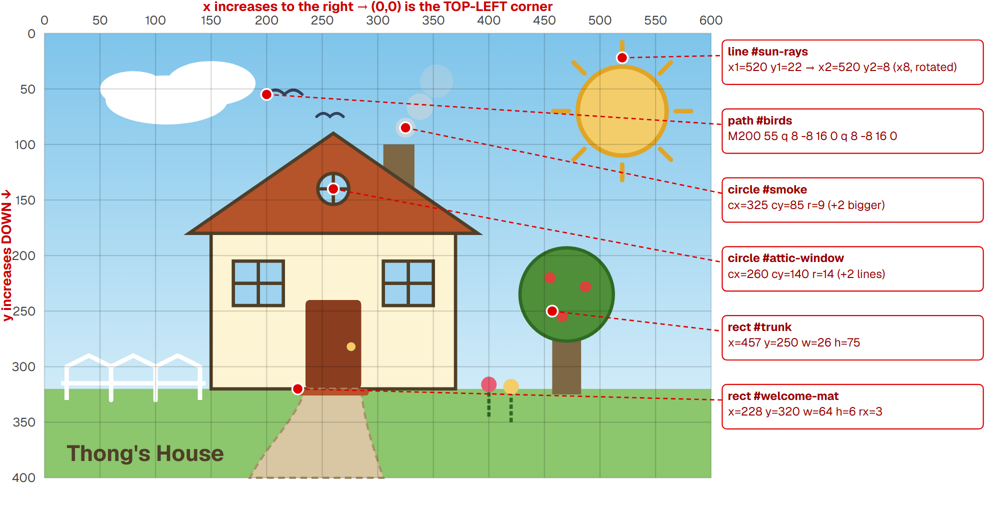
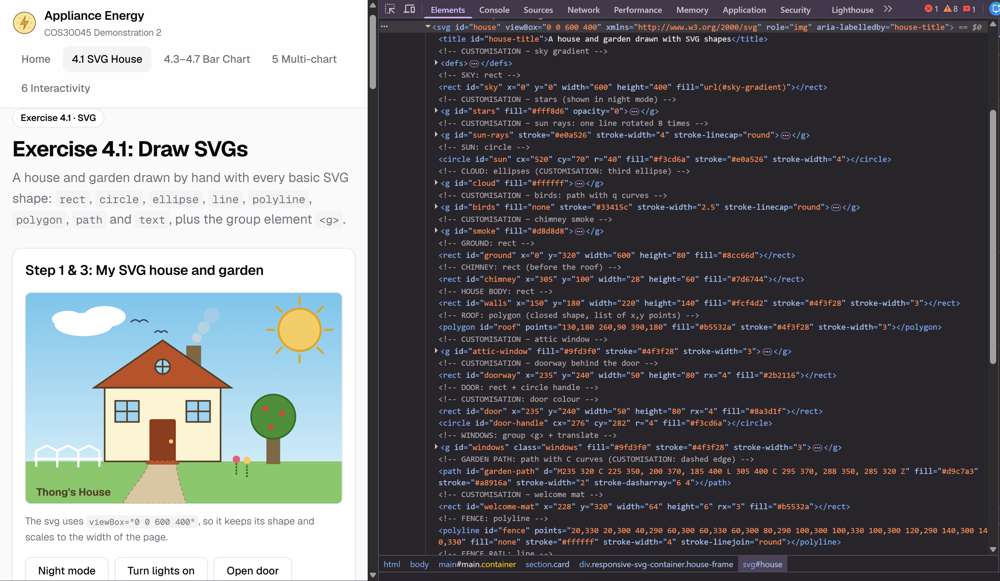

Exercise 4.1: Draw SVGs
A house and garden drawn by hand with every basic SVG shape:
rect, circle, ellipse, line,
polyline, polygon, path and text,
plus the group element <g>.
Step 1 & 3: My SVG house and garden
The svg uses viewBox="0 0 600 400", so it keeps its shape and scales to the width of the page.
Step 2: The SVG coordinate system
The origin (0, 0) is the top-left corner. x grows to the right and
y grows down, so the ground (y = 320) has a bigger y than the roof top (y = 90).
Each red dot marks the coordinate written in the code for that shape.
The screenshots show my finished picture, including the Step 3 customisations. Screenshot 3 marks the new items from Step 3.


| Shape | Attributes that position it | Used for |
|---|---|---|
rect | x, y (top-left corner), width, height, rx (round corners) | sky, ground, walls, door, chimney, trunk |
circle | cx, cy (centre), r | sun, tree canopy, door handle, flowers, smoke, apples, stars |
ellipse | cx, cy, rx, ry | cloud |
line | x1, y1 → x2, y2 | fence rail, window frames, flower stems, sun rays |
polyline | points (open shape) | fence |
polygon | points (closes itself) | roof |
path | d: M (move), C (Bézier curve), Q (quadratic curve), L (line), Z (close) | garden path, birds |
text | x, y (start of the baseline) | "Thong's House" label |
Step 3: Customisations
The changes are grouped like the four points in the exercise brief, and each one is marked with a
CUSTOMISATION comment in the code. Annotated screenshot 3 in Step 2 shows where the new items sit.
| Brief point | What I changed | How (SVG code) |
|---|---|---|
| 1. Changing / moving shapes | Fluffier cloud | Added a third ellipse to the #cloud group |
| Wider tree trunk | width 20 → 26 and x 460 → 457, so it stays centred under the canopy | |
| Sun with rays | One line copied 8 times, each turned with transform="rotate(45, 520, 70)", 90, 135… around the sun's centre | |
| 2. Changing fill colours | Gradient sky | Solid #bfe3f5 → <linearGradient id="sky-gradient"> in <defs>, used with fill="url(#sky-gradient)" |
| Red-brown front door | fill #4f3f28 → #8a3d1f | |
| 3. Adding / changing strokes | Stepping-stone path edge | stroke-dasharray="6 4" on the garden path |
| Outlined tree canopy | Added stroke="#2f6b25" and stroke-width="3" | |
| Round line ends | stroke-linecap="round" on the sun rays and birds; dashed flower stems; stroke-linejoin="round" on the fence | |
| 4. Adding other items | Chimney | rect drawn before the roof so the roof hides its bottom (drawing order = stacking order) |
| Garden path and welcome mat | Curved path (cubic Bézier C); thin rect with rx="3" | |
| Chimney smoke | 3 circles, bigger and more see-through (fill-opacity) as they rise | |
| Birds | Two paths, the first d="M200 55 q 8 -8 16 0 q 8 -8 16 0", with fill="none" (quadratic curves) | |
| Attic window, apples | circle + 2 lines in the roof; small circles drawn after the canopy so they sit on top | |
| Stars and doorway | Stars group starts at opacity="0"; a dark rect sits behind the door. The buttons above show them. |
The fill colours come from the power logo used on my energy website.
Step 4: The group element <g>
Both windows sit inside one <g id="windows">. The fill, stroke and stroke-width are set
once on the group and every child inherits them. Each window is its own inner group moved with
transform="translate(x, y)", so the rect and lines inside can use simple coordinates starting at 0,0.
<g id="windows" class="windows" fill="#9fd3f0" stroke="#4f3f28" stroke-width="3">
<g class="window" transform="translate(170, 205)">
<rect x="0" y="0" width="45" height="40" />
<line x1="22.5" y1="0" x2="22.5" y2="40" />
<line x1="0" y1="20" x2="45" y2="20" />
</g>
<g class="window" transform="translate(305, 205)"> ... same shapes ... </g>
</g>Step 5: Viewing the DOM
Open Developer Tools (F12) → Elements and expand <svg id="house">: every shape is a DOM element,
in the same order it is drawn.
